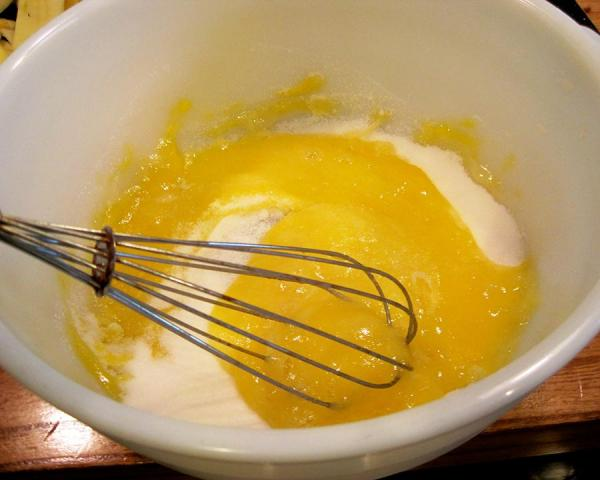
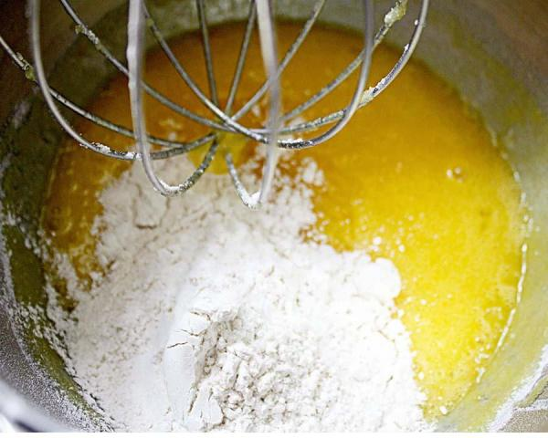
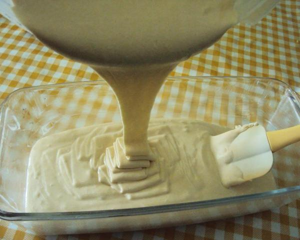
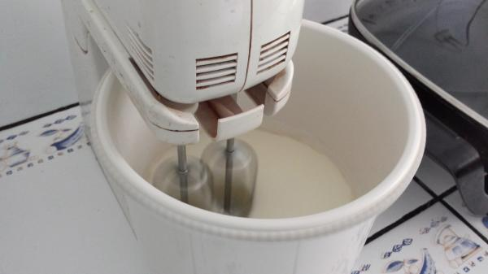
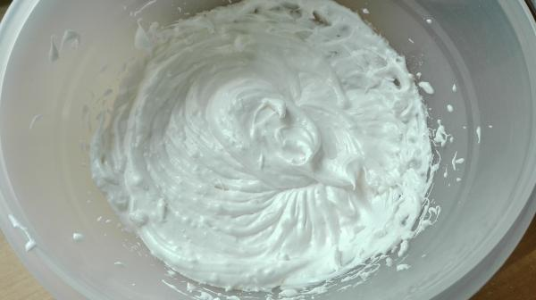
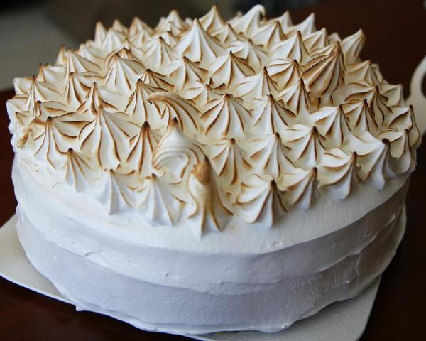

O bolo três leites, ou torta tres leches, é originário dos países hispânicos, como México e
Venezuela, e presença obrigatória em festas de aniversário. Vale a pena ficar conhecendo a
receita do bolo tres leches original e preparar em casa, pois é uma delícia: inclui leite
condensado, leite evaporado e creme de leite! Confira abaixo todos os detalhes e prepare com
a ajuda do TudoReceitas.com.
Passos a seguir para fazer esta receita:
- Para fazer o bolo tres leches comece por bater os ovos até ficarem bem cremosos.
Depois adicione o açúcar pouco a pouco, e continue batendo até dissolver e o creme
triplicar de volume.Dica: Ligue o forno nos 200ºC.

-
Acrescente a farinha pouco a pouco, previamente peneirada com o fermento em pó, e
misture no creme com movimentos envolventes, para não perder o volume. Adicione a
essência de baunilha e misture.
-
Quando a massa do bolo estiver pronta, unte e enfarinhe uma forma retangular,
quadrada ou redonda sem furo central, e coloque aí a massa. Leve a assar no forno a
200ºC por 25-30 minutos, ou até passar no teste do palito. Retire e deixe esfriar.

-
Enquanto o bolo cozinha, prepare o creme de três leites: em uma tigela grande bata o
leite condensado, o leite evaporado e o creme de leite, com uma batedeira elétrica, até
ficar bem cremoso.
Dica: A quantidade destes três ingredientes varia consoante a marca, no entanto devem ser
de 380 a 400g cada um.

-
Quando o bolo estiver à temperatura ambiente, desenforme, pique com um garfo ou
palito, e regue com a calda de três leites. Deixe ficar por 30 minutos a 1 hora, para que
a calda umedeça bem a massa do bolo.
Dica: Se quiser, pode cortar o bolo ao meio e regar o interior com a calda também.

-
Depois do bolo absorver bem a calda, prepare o merengue: bata as claras em neve e
adicione, pouco a pouco, o açúcar de confeiteiro, até obter uma consistência de
chantilly, como na fotografia.
Dica: Pode reduzir a quantidade de açúcar a gosto.

-
Cubra o bolo tres leches original com o merengue e decore a gosto, usando o
merengue em um saco de confeiteiro. Está pronto a servir! Apostamos que este bolo
simples mas delicioso fará o maior sucesso. Bom apetite!
Dica: É comum servir este bolo com fruta fresca, experimente!

| Informação Nutricional: |
|---|
| Um pedaço de bolo contém: 233 calorias |
| 3 g de gordura (2 g gordura saturada) |
| 76 mg colesterol |
| 126 mg sódio |
| 42 g carboidratos |
| 1 g fibra |
| 8 g proteína |